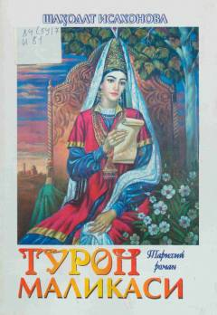

TMAmir Темур салтанати ва маликалар ҳаётидан ҳикоя қилувчи тарихий роман.
Mazkur тарихий роман Турон юртининг маликалари Бибихоним, Тўман Оғо, Руҳпарвар Оғо ва Тўкалхоним ҳаётининг муҳим даврлари ҳамда қисмат эврилишлари ҳақида ҳикоя қилади. Асар Амир Темур давriдаги сарой ҳаёти, сиёсий воқеалар ва инсон тақдирларини очиб беради. Ушбу китоб тарихий шахслар ва ўтмиш воқеалари билан қизиқувчи кенг китобxonлар оммасига мўлжалланган.